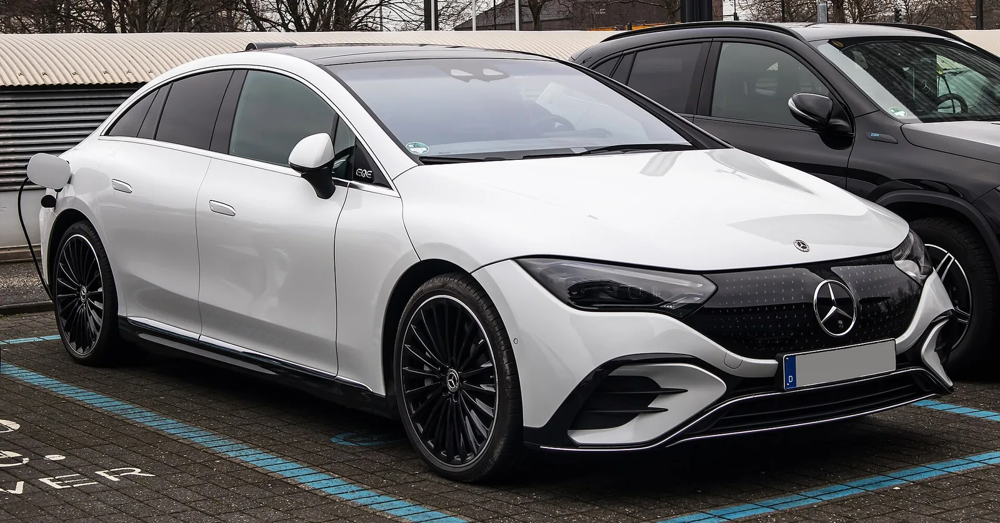
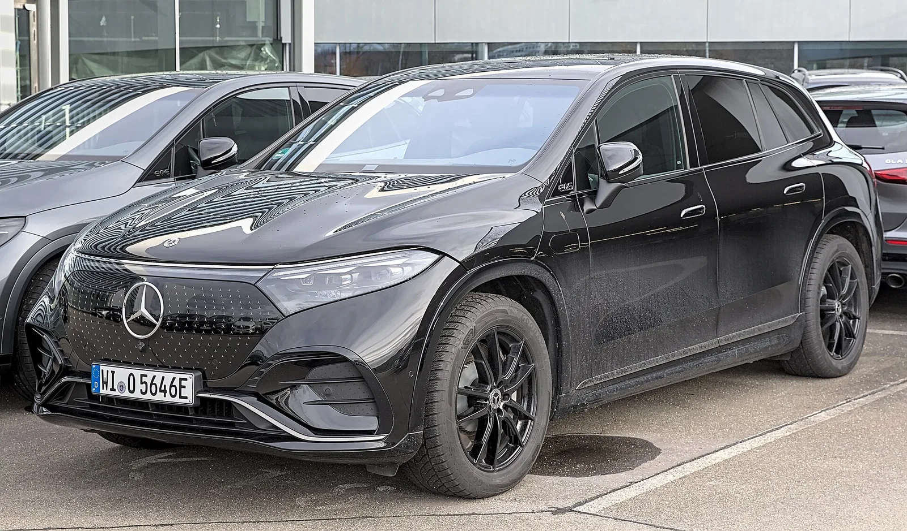

▲ EQS. EQ라는 이름을 단 마지막 세대가 될 전망이다 ⓒ Wikimedia Commons
벤츠가 EQ라는 이름을 접습니다.
앞으로 나올 전기차는 EQC·EQE·EQS처럼 EQ를 붙이지 않습니다. 기존 모델명을 그대로 쓰고 EQ는 기술 표기로만 남습니다.
EQE는 2026년 단종 예정입니다. 후속은 2027년 나올 E클래스 with EQ 테크놀로지입니다.
1. 왜 이름을 지우나
EQ는 2016년에 만들어진 이름입니다. 벤츠가 전기차를 별도 브랜드로 키우겠다며 내놓은 체계였습니다.
| 모델 | 대응 내연기관 |
|---|---|
| EQC | GLC |
| EQE | E클래스 |
| EQS | S클래스 |
| EQA·EQB | GLA·GLB |
이 체계가 안고 있던 문제는 두 가지입니다.
| 문제 | 내용 |
|---|---|
| 브랜드 자산 분리 | S클래스가 100년 가까이 쌓은 이름값을 EQS가 물려받지 못했다 |
| 혼동 | EQS와 EQS SUV, EQE와 EQE SUV — 구분이 어렵다 |
| 전제의 변화 | 전기차가 특별한 것이던 시절의 작명 — 이제는 기본이 됐다 |
첫 번째가 결정적입니다. "S클래스를 산다"는 말에는 축적된 의미가 있습니다. "EQS를 산다"에는 그것이 없었습니다.
벤츠는 "전동화 전환에 EQ 차명을 쓰는 것은 결국 불필요한 행동"이라고 정리했습니다. 스스로 만든 체계를 스스로 접은 셈입니다.
2. 새 작명은 어떻게 되나
| 구분 | 기존 | 신규 |
|---|---|---|
| 이름 | EQS | S클래스 with EQ 테크놀로지 형태 |
| EQ의 역할 | 브랜드명 | 기술 표기 |
| 이미 적용 | — | G580 with EQ Technology |
G580이 이 방식의 첫 사례입니다. 전기 G클래스를 "EQG"로 부르지 않고, G580 with EQ Technology로 이름 붙였습니다. G클래스라는 이름을 그대로 유지한 것입니다.
이 방식의 장점은 명확합니다. 구매자가 "G클래스를 사는데 파워트레인이 전기"라고 인식하게 됩니다. 새 브랜드를 배울 필요가 없습니다.

▲ EQE는 2026년 단종 예정이며 후속은 E클래스 with EQ 테크놀로지다
3. EQE가 먼저 접히는 이유
| 항목 | 내용 |
|---|---|
| 단종 | 2026년 예정 |
| 사유 | 타사 대비 경쟁력 부족과 그로 인한 판매 부진 |
| 후속 | E클래스 with EQ 테크놀로지, 2027년 |
| 공백 | 2026년 단종 ~ 2027년 출시 사이 약 1년 |
마지막 항목이 실질적 문제입니다. 후속이 나오기 전에 기존 모델을 접으면 그 기간 동안 해당 세그먼트가 비게 됩니다.
EQE SUV는 별개로 운영됩니다. 2026년형은 후륜 EQE 350+ SUV와 사륜 EQE 500 4MATIC SUV 2종 체제입니다.
즉 세단은 접고 SUV는 유지하는 구도입니다. 전기차 시장에서도 SUV 수요가 세단보다 강하다는 점이 반영됐습니다.
4. 디자인도 바뀐다
함께 수정되는 것이 '캡 포워드' 디자인입니다.
| 항목 | 내용 |
|---|---|
| 형태 | 앞유리를 앞으로 당기고 전체를 매끄러운 곡면으로 |
| 목적 | 공기저항 감소 — 전기차 주행거리에 직접 기여 |
| 결과 | EQS의 공기저항계수는 양산차 최상위권 |
| 문제 | "비누처럼 생겼다"는 반응 — 럭셔리 세단의 위엄이 사라졌다 |
공기역학과 브랜드 이미지가 충돌한 사례입니다. EQS는 효율에서 뛰어났지만, S클래스를 사려는 구매층이 원하던 형태가 아니었습니다.
이름과 디자인을 함께 되돌린다는 것은 전동화 초기 전략 전반에 대한 수정으로 읽힙니다.

▲ EQS의 하이퍼스크린. 실내 기술은 앞섰지만 외관 형태가 논란이 됐다
5. 국내 구매자에게 갖는 의미
| 항목 | 내용 |
|---|---|
| 잔가 | 단종·개명 예정 모델은 중고 시세가 약해질 수 있다 |
| 할인 | 재고 소진 국면에서 할인 폭이 커지는 경향 |
| 부품·정비 | 벤츠 서비스망에서 계속 대응 |
| 소프트웨어 | 단종 후 업데이트 지원 범위를 확인해두는 편이 좋다 |
마지막 항목이 전기차에서 특히 중요합니다. 전기차는 배터리 관리와 충전 제어가 소프트웨어에 의존합니다. 단종 모델의 업데이트가 언제까지 제공되는지는 계약 전에 물어볼 만한 항목입니다.

▲ EQ 라인은 세단을 먼저 접고 SUV를 유지하는 구도로 정리되고 있다
6. 정리
벤츠가 EQ 차명을 더 이상 쓰지 않기로 했습니다. 앞으로 나올 전기차는 기존 모델명을 유지하고 EQ는 기술 표기로만 남습니다. G580 with EQ Technology가 첫 사례입니다.
EQE는 2026년 단종 예정이며 후속인 E클래스 with EQ 테크놀로지는 2027년 나옵니다. 사유는 경쟁력 부족과 판매 부진입니다.
EQE SUV는 후륜 EQE 350+ SUV와 사륜 EQE 500 4MATIC SUV 2종 체제로 유지됩니다. 벤츠는 "전동화 전환에 EQ 차명을 쓰는 것은 결국 불필요한 행동"이라고 밝혔고, 캡 포워드 디자인도 함께 수정할 방침입니다.